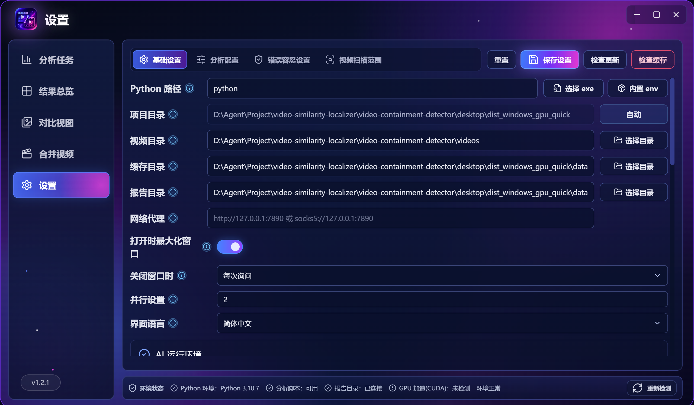
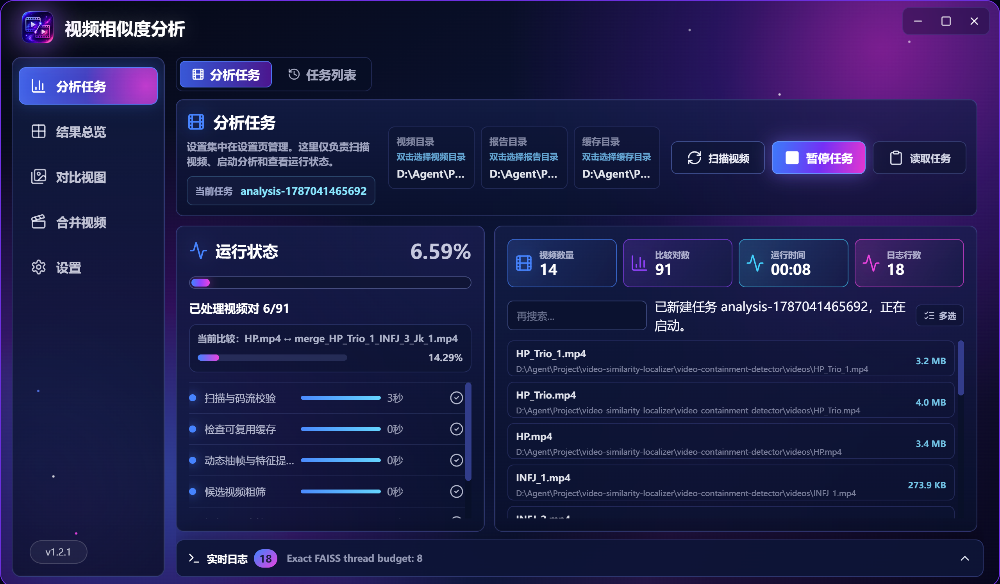
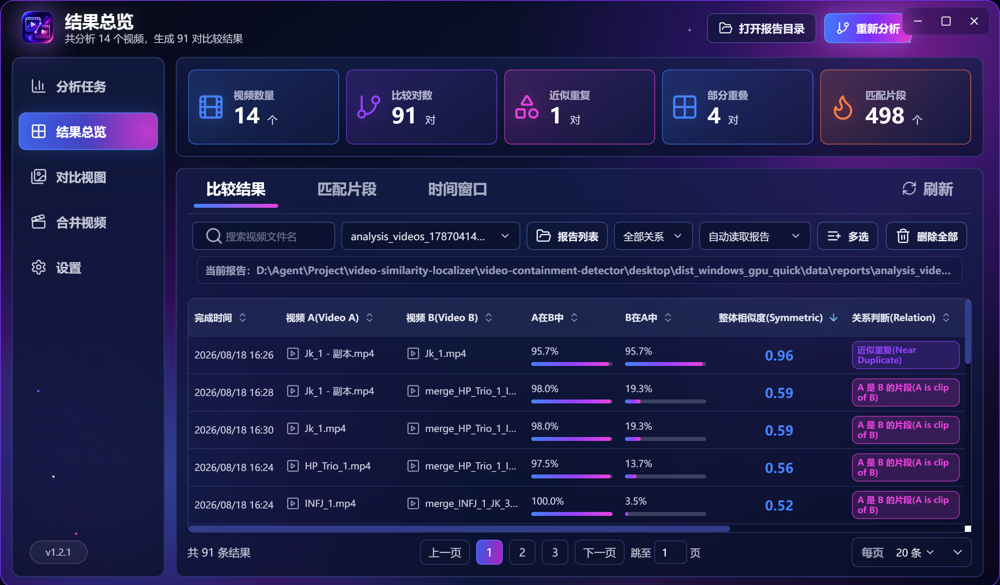
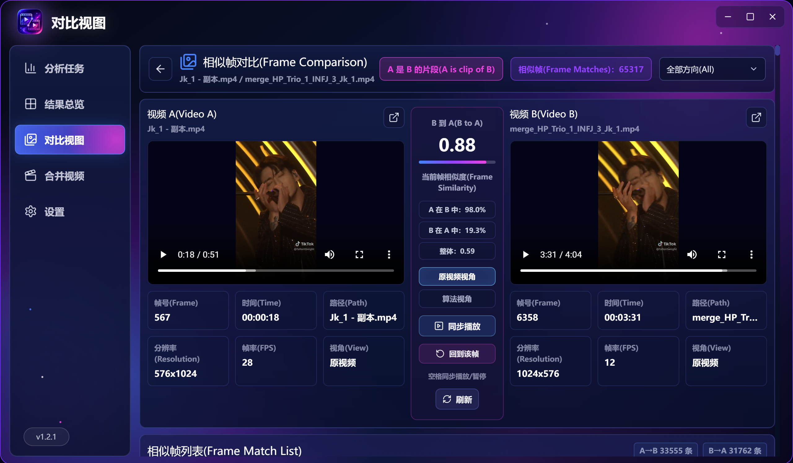
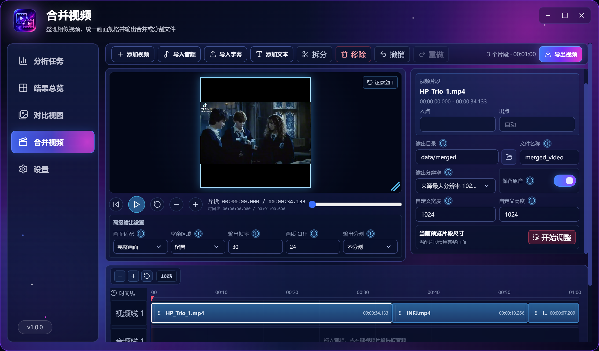

Start here
下载与首次启动
打开 Releases 下载页，选择与你的系统匹配的安装包。Windows 普通用户优先选择 CPU installer；只有 NVIDIA 显卡、驱动和计算能力都符合发布说明时才选择 GPU installer。不想安装可以下载 portable 便携包并解压运行。
安装或解压
安装版按向导选择目录；便携版请把整个文件夹一起保存，不要只复制 exe。
启动应用
首次启动可能需要等待环境检查。Windows SmartScreen 提示时，请确认文件来自项目 Releases。
打开设置
先完成目录和环境检查，再进入“分析任务”扫描视频。
Prepare once
设置目录与环境
第一次使用建议先进入左侧“设置”。应用会在启动时检查 Python、AI 环境、GPU 和 FFmpeg 状态；正常状态会显示为可用或已连接。

Detect similarity
创建分析任务
进入“分析任务”，扫描视频后点击“新建任务”。选择合适的模式，确认视频数量和配置，再开始运行。任务会自动保存，报告生成后可以从“结果总览”打开。

想找剪辑片段
选择“视频相似度”模式。它会识别片段包含、近似重复和部分重叠，压缩、裁剪或轻微调色也可能被识别。
只想删重复文件
选择“对比相同文件”模式。它只判断文件内容是否完全相同，不能发现画面相似但编码不同的视频。
Safe task control
暂停、继续与读取任务
分析过程中，左侧底部的“分析任务”胶囊会显示进度。点击“暂停任务”后，当前进度会保留；等待状态变为“已暂停”后，点击“继续任务”即可接着运行。
任务正在抽帧、提取特征或比较视频。
程序正在安全停止当前步骤，请不要强制关闭窗口。
进度和断点已保存，可以稍后继续。
从已完成的阶段和缓存继续，不必从头开始。
读取历史任务
打开“任务列表”，选择目标记录并点击“读取任务”。应用会读取该任务保存的完整配置、视频列表和阶段进度；读取失败时会保留提示，不会伪装成读取成功。需要继续时，再点击“继续任务”。
Review evidence
查看结果与对比
分析完成后进入“结果总览”。报告按配置和任务独立保存；切换不同任务或配置时，请在报告选择器中选中对应报告。双击一行结果可进入对比视图。


01先看关系类型“片段包含”表示一边很可能是另一边的片段；“近似重复”表示两边大部分内容相近；“部分重叠”表示只有一段时间相似。
02再看匹配片段拖动或同步播放，确认相似画面是否真的对应，而不是同场景、同字幕或相似构图带来的误报。
03最后再整理文件确认保留版本后再移动或删除。删除源视频前应用会请求确认，但仍建议先备份重要素材。
Edit and export
合并视频
进入“合并视频”，可以把多个视频、音频和文本片段放到时间线上，调整顺序、裁剪区间、旋转方向和导出参数。此功能使用独立 FFmpeg 环境，与 AI 分析环境分开。

- 添加片段选择视频、音频或文本文件。多个源文件夹可以同时使用。
- 编辑时间线拖动片段调整顺序，选择片段后修改属性；播放头可以预览当前位置。
- 点击导出视频在弹窗中选择“使用源文件夹”或“浏览选择文件夹”，再填写导出名称和格式。
- 等待导出完成左侧底部的“导出视频”胶囊会显示进度、暂停/继续按钮和日志；完成后可点击“前往输出文件夹”。
Keep it healthy
更新与维护
更新应用
启动时程序会自动检查应用更新。发现新版本会弹窗提示；应用更新通常只替换界面和程序文件，视频、报告、缓存和环境会继续保留。
更新运行环境
在设置页对应卡片点击“重装/更新环境”。程序会先检查当前环境文件的版本和哈希，再让你选择更新或重装。模型和 FFmpeg 也有各自独立的卡片。
清理缓存
缓存用于断点和复用特征。空间紧张时可以清理旧缓存；清理不会删除原视频，报告是否删除取决于确认弹窗。
备份报告
定期备份报告目录中的 JSON、CSV 和 HTML 文件。不同分析配置会生成独立报告，建议不要只保留一份导出文件。
如果只是更新应用界面，一般不需要重新安装 AI 环境、CLIP 模型或 FFmpeg。只有对应组件本身发生变化，或文件损坏、校验失败时，才需要在设置中更新/重装。
Troubleshooting
常见问题
第一次分析为什么要下载很多东西？
视频相似度模式需要 Python/PyTorch/CUDA 运行环境和 CLIP 模型。它们按需下载并保存在程序目录附近，后续分析会复用。若只查完全相同的文件，可改用“对比相同文件”模式，不需要抽帧和 CLIP。
完美匹配很慢或内存占用很高怎么办？
完美匹配会比较全部视频组合。先用“普通”或“快速”筛选，再对少量疑似视频使用“精确/完美匹配”；同时减少一次任务中的视频数量，确保缓存目录有足够空间。
结果数量和上一次不一样，报告好像被覆盖了？
不同任务和不同分析配置应使用独立任务记录及报告。请到“任务列表”读取正确任务，再在结果页的报告选择器中确认当前报告；不要只根据文件名判断报告归属。
暂停后继续为什么失败？
请等待状态完整变为“已暂停”后再继续，不要强制关闭应用或重复点击。若旧进程仍在安全退出，稍候再点；检查任务列表中是否仍有完整的运行配置。
合并视频提示输出目录无效怎么办？
重新打开导出弹窗，在“导出文件夹路径”下拉框中选择一个实际存在且可写的目录；多个源文件夹时不要手动输入不存在的路径。必要时使用“浏览选择文件夹”打开系统目录选择器。
GPU 没有检测到，还能分析吗？
可以。设置页将设备切换为 CPU 即可运行，只是速度通常较慢。GPU 模式需要兼容的 NVIDIA 显卡、驱动和 GPU 运行环境；不确定时优先使用 CPU 版本。
应用无法播放某个视频怎么办？
播放器支持的编码取决于系统 WebView2 和视频编码。即使预览无法播放，分析仍可能成功；可以使用结果中的帧预览和时间戳复核。
请记录应用版本、操作系统、分析模式、错误提示和日志中最后几行，再到 GitHub Issues 提交问题。不要上传包含私人视频路径或敏感信息的报告。